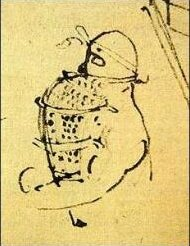

You invent something amazing: a way to stay underwater for a long time. Do you tell the world? Leonardo da Vinci wrote down his answer about five hundred years ago, and it is still a hard question.
Leonardo filled thousands of pages with notes. About 7,000 survive today, and he probably wrote many more. Flying machines, bodies, storms, jokes, shopping lists, whatever crossed his mind that day. Most of it was private. Here is one page where he stops and says: I know something, and I'm not telling.
In his own words
How by a certain machine many may stay some time under water. And how and wherefore I do not describe my method of remaining under water and how long I can remain without eating.
Read that again. He says he has a method, and that he knows how long he can last without eating. Then he refuses to explain it. Why?
In his own words
And I do not publish nor divulge these, by reason of the evil nature of men, who would use them for assassinations at the bottom of the sea by destroying ships, and sinking them, together with the men in them.
There it is. He was not worried about someone stealing the idea. He was worried about what people would do with it: sneak up on ships from underneath and sink them with the sailors still on board. Leonardo had built something powerful, and he decided the world could not be trusted with it.
The safe version
In his own words
Nevertheless I will impart others, which are not dangerous because the mouth of the tube through which you breathe is above the water, supported on air sacks or cork.
So he shared the harmless part: a breathing tube held above the surface by floats made of air sacks or cork. That is a lot like a snorkel. Look at how odd and specific his thinking is. Even his safe idea comes with a plan for keeping the top of the tube dry.

A joke, for balance
He was not serious every minute. Among notes for festival costumes and decorations, he jotted this:
In his own words
A bird, for a comedy.
That is the whole line. It sits next to a sketch of a bird with its wings spread, sliding down a string as if it were flying across a stage. The same restless mind that planned flying machines also wanted to make a bird zoom over an audience for a laugh.
Words to know
- divulge
- to reveal a secret
- impart
- to share or pass on to others
- assassination
- a secret killing, usually of someone important; here, a sneak attack
Try it
Optional. For after your session with Rocky, on your own time. Ask a grown-up before you use any website.
- Float test (toy only): tape a drinking straw to a cork or a piece of foam, float it in a bowl or sink, and make waves. Can you keep the top of the straw dry? Never put your face underwater and breathe through a tube.
- See what a real Leonardo notebook looks like: the Codex Arundel is one of his notebooks that survives today, held by the British Library.